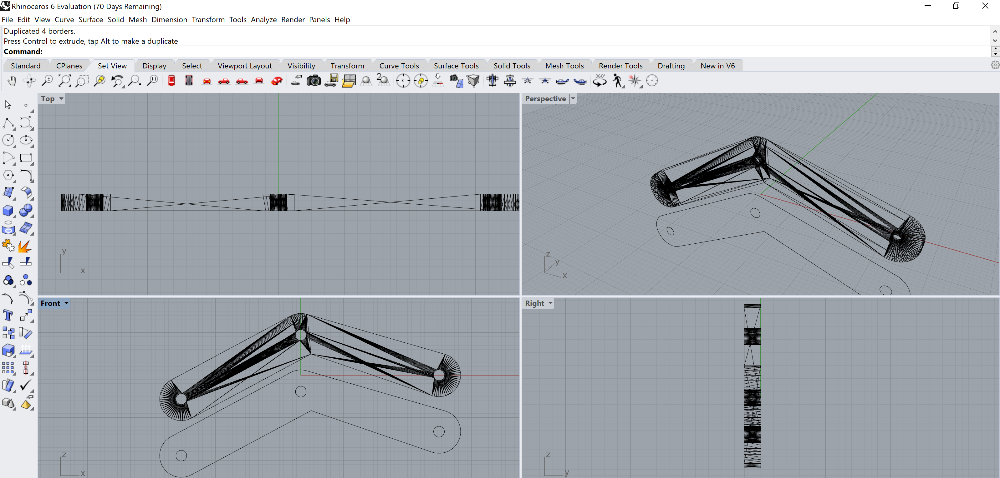

Assignment 4: Moving parts
Process
Model moving parts in 3D using OnShape. Some things were easier to create in OnShape. Seeing the parts being assembled and animate was very satisfying.
I was interested to see how gears can be modeled within OnShape as this could be something that I could use in the final project. This assignment was a good opportunity to learn how to do so.
Design and execution
I decided to create a “hand” that can be driven by two gears. First, some sketches to plan out what the final product will look like. It consists of a base plate holding the gears, two gears, and an arm.
CAD design in OnShape
Some math involved to design the gear. From online sources, I used the commonly used pressure angle of 20 degrees. I also picked a diametral pitch of 24, 36 gear teeth. I then used the formulas to calculate the pitch diameter, pitch circle, and outside diameters to get the basic dimensions of the gear.
I modeled the gear in Onshape in a sketch in Normal to view. Construction lines were used to define the helper arcs and lines to draw the gear using the figures from the gear calculations from above.
The sketch was then extruded to the thickness of the acrylic plastic sheet that I’ll be using to laser cut.
The circular pattern command that allowed me to repeat the gear’s tooth pattern around the entire shape. This made things a lot easier as I didn’t need to draw every tooth.
To finish this off, an elbow arm was created.
Bolts to assemble the contraption was also created.
Everything will be mounted on a base plate with axels embedded within the plate for the gears.

In the Assembly view, I hooked up the gears to the base plate using a Revolve mate, bolts to the gears using a Fasten mate, and connected the gear’s revolve mates together with a Gear mate. The arm was connected to the gear with a Revolve mate to allow some freedom of movement.
3D printing
I decided to 3D print the base plate and pins as they are 3-dimensional objects. The pins were exported as an STL file from OnShape. It was then imported into Simplify3D. The default Dremel Idea Builder 3D40 settings within Simplify3D seemed reasonable and produced good results.
The same process was applied to the base plate.
Multiple parts were printed at the same time for efficiency.
Laser cutting
The gears and arm were created by cutting out the shapes on a piece of 1/16” thickness acetal copolymer sheet using a laser cutter.
First, the parts that were modeled in OnShape had to be exported into a vector file like .svg. Unfortunately, I wasn’t able to have OnShape export to a file that wasn’t either scaled or rasterized via the built-in DXF exporter. As a workaround, I exported the shapes as a .stl file first and then imported them into Rhino3D.
Within Rhino3D, I first exploded the object to separate the faces using the Explode command. I will use the face as the template to create a 2D representation of what I will be laser cutting.
I then used the DupBorder to create a border outline of the shape. This was then exported as an AI file for printing in Adobe Illustrator.

Minor adjustments were made in Adobe Illustrator to ensure that the shape will be interpreted as vectors so that they can be printed quickly.
Final product
Once assembled, the contraption looks like the following.
Turning the gears will spin the arm.
Learnings
For some reason, the base plate couldn’t be spliced using Dremel DigiLab 3D Slicer. It produced files that failed to copy onto the printer. One thing I noticed was that the estimated print time when this happens is 0 mins. With advice from the staff at The MILL, I spliced the object in Simplify3D which worked fine.
I found that when converting from one file type to another, I often ran into issues where the object’s scaling was off. For example, this seems to be prevalent after switching units, like from millimeters to inches or vice versa, within OnShape. Dremel DigiLab 3D would incorrect size the object to be too small. It was good practice to verify the scale of all imported objects and resize them uniformly if the scaling was incorrect.
Good thing Joshua talked about kerf last week. He was right that cardboard was very forgiving. Plastic, on the other hand, needed to be precise for things to fit together.
Source files
- Profile: Dremel Idea Builder 3D40
- Layer> Layer Settings> Primary Layer Height: 0.2000 mm
- Additions> Use Skirt/Brim: checked
- Infill> General> Internal Fill Pattern: Rectilinear
- Infill> General> External Fill Pattern: Rectilinear
- Support> Support Material Generation> Generate Support Material: checked
- Speed: 7%
- Power: 100%
- Freq: 50%
OnShape project file: here
- Gear handle:
- STL file: A4-Gear handle.stl
- Simplify3D project file: A4-Gear handle.factory
- G3DREM file for printer: A4-Gear handle.g3drem
- Base plate:
- STL file: A4-Base plate.stl
- Simplify3D project file: A4-Base plate.factory
- G3DREM file for printer: A4-Base plate.g3drem
- Base plate (small):
- STL file: A4-Base plate small.stl
- Simplify3D project file: A4-Base plate small.factory
- G3DREM file for printer: A4-Base plate small.g3drem
- Gear: A4-Gear.ai
- Arm: A4-Arm.ai
Thanks!
Thanks to JoshuaV on his tips for offsetting edges. Also thanks to Haihua for her tips on the laser cutter settings for cutting plastic. Lower the speed definitely helped with the quality of the cuts. Jose Santos from Makezine provided excellent instructions for converting STL files for laser cutting.
References
Santos, J. (2015, July 14). Skill Builder. Convert a STL File for Laser Cutting. Retrieved from https://makezine.com/projects/skill-builder-convert-stl-file-laser-cutting/.